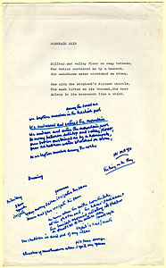
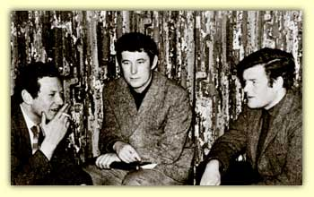

Overview
| Workshop List | Biographies
| Search
| Homepage
The Belfast
Group: A Checklist
First Period: October
1963- March 19661
Anonymous "When Rebecca Comes" (play), no date. Source: Hobsbaum Collection.
Ashton, Victor "Beyond the Pale," "Invoking the Muses," "Down to
Basics," "The Fighting Cock," "Sense and Sensibility," "The House off the
Road," "The Outsider," "Running through Windy Gap," no date. Source: Hobsbaum
Collection.
|  |
|
Group
Sheet by Michael Longley with draft notes in his hand, no date.
(Click
to view larger image.)
|
Bond, John "David Gallacher" (short story) with Simmons, James: "That Sailor," "An American Settler's Soliloquy," "Confession," no date. Source: Hobsbaum Collection.
Bond, John "Domus a Nunn" (short story), no date. Source: Hobsbaum Collection.
Bond, John "Sick Visiting" (short story), no date. Source: Hobsbaum Collection.
Bredin, Hugh "The Kingdom of Heaven" (short story), no date. Source: Simmons Papers & Hobsbaum Collection. Bredin, Hugh "Wolf" (short story), no date. Source: Simmons Papers & Hobsbaum Collection. Bredin, Hugh "Ordination Day" (short story), no date. Source: Hobsbaum Collection. Brophy, Michael "Morning Paper," "Home from the Holidays," "Grey Ashes," "The Virgin," "Motive for Murder," "The Last Bus," "This is Your Life," no date. Source: Hobsbaum Collection. Bull, Iris "A Childhood," "Circe," "The Visit," "Baby," "Death of an Uncle," "Hospital," no date. Source: Hobsbaum Collection. Bull, Iris "The Fairground," "The Drowned Man," "Remnants," "A Literary Pilgrimage," "The New Creation," "Leah and Rachel," "The Old Man" no date. Source: Hobsbaum Collection. Buller, Norman "A Professor Asleep," "Conscripts," "The Mortal Cold," "The Ignorant Desire," "The Aboriginal," "Aubade," "Passion Flowers," "Tchaikowski's Mistress," no date. Source: Hobsbaum Collection. Croskery, Lynette "The Dress," "The Daisy Chain" (short stories), no date. 2 Source: Hobsbaum Collection. Dugdale, Norman "The New Men," "Laertes," "Reasons of State," "Frontier Incident," "To Venus," "Dublin," "The Disposition of the Weather," no date. Source: Hobsbaum Collection.
Foster, Rodney Untitled poem, no date. Source: Hobsbaum Collection.
Gallagher, Maurice "The Ship" (play), no date. Source: Hobsbaum Collection. Gallagher, Maurice "Tragrainey" (short story), no date. Source: Simmons Papers & Hobsbaum Collection.
Harvey, W. John "The Poem in October," "Reading Drayton in October,"
"Hart Crane," "Sea-Side Song," "Leni Riefenstahl's Olympiad: 1936," "The
Sorcerer's Apprentice," "Arriving at Larne: Seasick," no date. Source: Longley
Papers, & Hobsbaum Collection.
Heaney, Seamus "Boy Driving His Father to Confession,"
"To a Wine Jar," "On Hogarth's Engraving 'Pit Ticket for the Royal Sport,'"
"Synge on Aran," "Blackberry-Picking," "Saint Francis and the Birds," "At
a Potato Digging," 27 April 1965.3 Source:
Longley Papers & Hobsbaum Collection.
Heaney, Seamus "Digging," "Death of a Naturalist,"
"Storm on the Island," "Soliloquy for an Old Resident," "Writer and Teacher,"
"Young Bachelor," "Scaffolding," [Spring 19644
]. Source: Longley Papers (2 copies) & Hobsbaum Collection.
Heaney, Seamus "Diviner," "Gravities," "Ancestral Photograph," "For
the Commander of 'the Eliza,'" "Personal Helicon," "Girls Bathing, Galway
1965," "The Salmon Fisher to the Salmon," no date. Source: Longley Papers
(3 copies) & Hobsbaum Collection.
Heaney, Seamus "Docker," "An Advancement of Learning," "Fisher," "Amputation," "National Trust," "A Cistercian Speaks," no date. Source: Hobsbaum Collection.
Heaney, Seamus "Elegy for an Unborn Child," "Triptych for the Easter
Battlers," "Homage to Pieter Breughel," "Persephone," "Rookery," "Requiem
for the Irish Rebels," "The Peninsula," "Orange Drums, Tyrone 1966," no
date. Source: Longley Papers (2 copies) & Hobsbaum Collection.
Heaney, Seamus "Oh Brave New Bull," "Mid-Term Break," "A Pillar
of the Community," "MacKenna's Saturday Night," "Turkeys Observed," "The
Indomitable Irishry," "Obituary," no date. Source: Simmons Papers & Hobsbaum
Collection.
Heaney, Seamus "Taking Stock: 5/4/'64," "Twice Shy," "The Early Purges," "In Glenelly Valley," "Ex-Champ," "The Evangelist," "Men's Confessions," no date. Source: Simmons Papers & Hobsbaum Collection. Hobsbaum, Philip "In Retreat," no date. Source: Hobsbaum Collection & Simmons Papers. Hobsbaum, Philip "Study in a Minor Key," no date. Source: Hobsbaum Collection. Hobsbaum, Philip Untitled poem, no date. Source: Hobsbaum Collection. Johnston, J.K."The Park," "On Being Pushed Over the Edge of a Cliff," "The Eyes," "Song of a Drunken Student," "Prostitutes," "Violent Progression," no date. Source: Hobsbaum Collection.
Longley, Michael "Circe," "The Ornithological Section," "Orpheus,"
"A Personal Statement," "The Centaurs," "The Housewife's Testament," "Christopher
at Birth," no date. Source: Longley Papers (2 copies) & Hobsbaum Collection.
Longley, Michael "Dr. Johnson on the Hebrides," "Leaving Inishmore,"
"Camouflage," "Persephone," "To Derek Mahon," "A Working Holiday," "Words
for Jazz Perhaps" ("Elegy for Fats Waller," "Billie Holiday," "Bud Freeman
in Belfast," "To Bessie Smith"), no date. Source: Longley Papers & Hobsbaum
Collection (2 copies).
Longley, Michael "In Memoriam," "Christopher
at Birth," "Freeze-Up," Saint Francis to the Birds," "Elegy for Fats Waller,"
"Epithalamion," "En Route," no date. Source: Longley Papers5
& Hobsbaum Collection.
Longley, Michael "No Continuing City," "A Slight
Adultery," "The Journey," "To Edna," "Her Mime of the Lame Seagull," "The
Hebrides," no date.6 Source: Longley Papers
& Hobsbaum Collection.
McEldowney, Eugene "The Old Man and the Young," and untitled story (short stories), no date. Source: Hobsbaum Collection. McEldowney, Eugene "A Voice Among the Many" (short story), no date. Source: Hobsbaum Collection. MacLaverty, Bernard "The Choice" (short story), no date. Source: Simmons Papers & Hobsbaum Collection. MacLaverty, Bernard "The Interview" (short story), no date. Source: Hobsbaum Collection. MacLaverty, Bernard "Jim Scroggy" (short story), no date.7 Source: Simmons Papers. MacLaverty, Bernard "Wiglaf the Viking" (short story), no date. Source: Hobsbaum Collection. Mitchell, Michael "The Morning Went Bang," "Mr. Celebrity," "Notes on Mechanical Christmas Cards," "Prometheus," "Fisherwoman," "The Cold Equations," "I Do Not Love Thee Dr. Snell" no date. Source: Hobsbaum Collection.
Pakenham, John ("Jack") "Ecstatic Love Poem," "I Remember You Said,"
"January 63," "Can You Remember?," "Two Ways of Living," "A Warm Day June
63," "Thoughts on a 25th Birthday," no date. Source: Hobsbaum Collection.
Parker, Stewart "The Casualty Meditates Upon His Journey," no date. Source: Hobsbaum Collection. Parker, Stewart "Paddy Dies," "Valediction for Hammy," "Inside a Home for the Old," "The Broken Lives," "Coming Out," "Postscript," no date. Source: Simmons Papers & Hobsbaum Collection. Parker, Stewart Untitled ("The last-term feeling was everywhere. . . .) (short prose), no date. Source: Simmons Papers & Hobsbaum Collection. Parker, Stewart Untitled (short prose), no date. Source: Hobsbaum Collection. Robson, Bryan "The Great Aunts," "Confession Out of Term," untitled poem, "Shakespeare in Drag," "A Fever in Summer," "Mr. S. Beckett at Campbell College" no date. Source: Hobsbaum Collection. Robson, Bryan "Keats," untitled poem, "Homage Samuel Beckett," "Talking of Dragons," "Four Poems from a Durham Childhood," "On Slea Head," no date. Source: Hobsbaum Collection.
Scott, Brian Untitled poem ("close close"), untitled poem ("your
body your"), "Last Night I Wrote a Poem of Love," untitled poem ("sun"),
"Because I Have a Pact with the Maker," "Miracle," no date. Source: Simmons
Papers & Hobsbaum Collection.
Scott, Brian Untitled poem, untitled poem, untitled poem, "University Tulips," "After a Disturbance," "Fragments," "Blind Man," no date. Source: Hobsbaum Collection. Simmons, James "Drinker's Blues," "Fahan Strand," "Old Lady's Song," "Ramble Away," "The Young Airforce Men," "The Ulster Soldier Boy," no date. Source: Hobsbaum Collection. Simmons, James "Sonnets for the Class of '58," "One Man-Two Voices," "On Gardens," "At Cordelia's Grave," "Singing at a Coffee Party," "Soliloquy for a Ghost," no date. Source: Hobsbaum Collection. Simmons, James, see also John Bond (above). Smyth, Paul Untitled short story, no date. Source: Hobsbaum Collection. Smyth, Paul Untitled short story, no date. Source: Hobsbaum Collection. Smyth, Paul Untitled short story, no date. Source: Hobsbaum Collection. Stronge, Marilyn "To and Fro," "Night Falls," "Green-Grey to the Ocean," "The Sea," "Hour of Light and Dark," "Night Falling," no date. Source: Hobsbaum Collection. Sullivan, Ronald "Notes on 'Reflections,'" "Image One" (prose fragments), no date. Source: Hobsbaum Collection. Sullivan, Ronald Untitled poem, untitled poem, untitled poem, untitled poem, untitled poem, "For Christ's Sake," untitled poem, "Extracts from a Diary" (prose fragment), no date. Source: Hobsbaum Collection. Terry, Arthur "A Small War," "The Appointment," "The Sisters," "Told After Brueghel," "Caesar" (translations), no date. Source: Longley Papers & Hobsbaum Collection. Terry, Arthur "Beginnings," untitled ("On Sunday evenings in the poor quarter"), "Time Was," "My Skeleton" (translations), no date. Source: Longley Papers (2 copies) & Hobsbaum Collection. Terry, Arthur "By Natural Piety" (translation), no date. Source: Longley Papers & Hobsbaum Collection. Watton, Joan (Newmann) "Aunt Alice," "Spinster," "The Hangover," "Detachment," "Maggie," "Letters from the Island," "Wakening," no date. Source: Simmons Papers & Hobsbaum Collection.
Watton, Joan (Newmann) "Betrayal," "Gleneyre Children's Home," "An
Old Man in a Fish Shop," "Worm," "Nightmare," "A Lone, Middle-Aged, Unmarried
Woman Relates," "Boyhood Memory," no date. Source: Simmons Papers & Hobsbaum
Collection.
Watton, Joan (Newmann) "Requim of a War-Baby," "A Fly's Belsen,"
"Without Preliminaries," "The Industrials," "Ian," "Camp Memories," no date.
Source: Hobsbaum Collection.
|  |
|
James
Simmons, Seamus Heaney, and Michael Longley
in the mid-1960s.
|
Second Period, 1966-1970 & 1971-1972?8
Bond, John Untitled ("Mam") (short story), no date. Source: Simmons Papers. Bull, Iris "Facets of War," "The Gulf," "A Backward Glance," "Without You," "A Walk in Winter," "Gifts," "Cavaliers," "Life's Little Ironies," no date. Source: private collection (not examined). Carson, Ciaran "Letter from Alaska," "Aranmore Island," "The Island Revisited," "Wheel," "Post Mortem on a Mass Grave," "The Clockwork Pigeon," no date. Source: Carson Papers. Dugdale, Norman "Seated King and Queen," "Dalesmen in Craven," "Anarchist," "A Study in Sepia," "Bog," "Nekuia," [13 Dec 19719 ]. Source: Irish Literary Miscellany. Dugdale, Norman "Terminus," "A Question of Identity," "A Self-Portrait," "Salmon-Leaf: Mayo," "On a Recent Happy Event," "Saturday," "N.W.S," "Autopsy on the Fifth Decade," no date. Source: Longley Papers (2 copies). Dugdale, Norman "Two in Connemara," "Galatea to Pygmalion," "Poor Fitz," "Easter in Craven," "Lines for an Old Lady," "Against Abstraction," "Sea-Change," no date. Source: Irish Literary Miscellany. Gallagher, Maurice Untitled ("Jimmy McHugh was a very quiet person. . . .") (short story), no date. Source: Simmons Papers. Heaney, Seamus "At Ardboe Point," "Good-Night," "The Crowing Man," "Shore Woman," "Yank," "A Winter's Tale," no date. Source: Longley Papers.
Heaney, Seamus "Death of a Naturalist," "Lovers on Aran," "Follower,"
"Elegy for a Still-Born Child," "Personal Helicon," "Antaeus;" Kennelly:
"The After Child," "The Blind Man," "Marlowe," "The Good," "Light Dying,"
"The Dummies;" Longley: "The Osprey," "The Hebrides," "Elegy for Fats Waller,"
"Dr. Johnson Dying," "Gathering Mushrooms," "Persephone," no date. Source:
Longley Papers.
Heaney, Seamus "Icon," "Limbo," "Wedding Day," "The Last Mummer," "High Street, Belfast, 1786," "Tweed," "Dawn," "Bye-Child," no date. Source: Longley Papers. Heaney, Seamus "A Lough Neagh Sequence," no date. Source: Longley Papers (2 copies).
Heaney, Seamus "Servant Boy," "The Last Mummer,"
"Gifts of Rain," "The Tollund Man," "Westering," 8 Nov. [1971?],10
No. 4 University Square. Source: Carson Papers, Simmons Papers & Ormsby
Papers.
Hobsbaum, Philip "Dead End," "Derry City,"
"The Riding-Mistress," "A False Martyr," "Undergraduate Party," "Stout Person's
Meditation on Sex," "Cock of the Walk," no date.11
Source: Hobsbaum Collection.
Longley, Michael "Altera Cithera," "Three
Posthumous Pieces," "The Island," "Casualty," "Badger," "Hedgehog," "Kingfisher,"
"Robin," "The Adulterer," 31 Jan [1972],12
No. 4 University Square. Source: Carson Papers (2 copies), Longley Papers
(3 copies) & Ormsby Papers.
Longley, Michael "Emily Dickinson," "The Osprey," "In Memoriam,"
"Christopher at Birth," "Gathering Mushrooms," "Persephone," "Dr. Johnson
on the Hebrides," "Remembrance Day," "Man Friday," no date. Source: Longley
Papers.
Longley, Michael "A Headstone," "Man Friday," "Out of the Sea" ("Seahorses"
& "Bikini Atoll"), "Homage to Buster Keaton," "Fanny Hill," "Klondike,"
"Journey Out of Essex," "Barracuda," no date. Source: Longley Papers (6
copies).
Longley, Michael "Gathering Mushrooms," "To Bix Beiderbecke," "Nausicaa," "The Freemartin," "Narcissus," "Dr. Johnson Dying," "In a Convent Cemetery," "Remembrance Day," no date. Source: Longley Papers.
Longley, Michael "To the Poets," "Mountain
Swim," "A Nativity" ("Dog," "She-goat," "Chaffinch"), "Miscarriage," "The
North," "Lares" ("Farls," "Bridget," "Furrows," "Beds," "Neighbors," "Patrick"),
"Caravan," no date.13 Source: Longley Papers
(2 copies), Simmons Papers & Ormsby Papers.
McGurk, Tom "First-Born," "Kavanagh's Arrival," "Heartman--Still Beating Strong," "Big Ned," "A Parable of Stony Ground," Myxomatosis 1955," "The Empty Pages," "Henry IX," no date. Source: Longley Papers. McGurk, Tom "The Magi," "A.D. 1969," [missing text], "A Tribute to Patrick Kavanagh," "On a World War I Photograph" [missing text], "Going Up," 1 Dec [1969?]. Source: Longley Papers.
McGurk, Tom "September Sibelius," "Protest," "The Son of the King
of Moy," "Apologia in Memoriam," "Greetings," "Mise Eire," "Facts of Life"
("First-Born," "First-Poem," "First-Sin," "First-Love"), no date. Source:
Simmons Papers.
MacLaverty, Bernard. "The Deep End," 14 Feb [n.y.], No. 4 University
Square. Source: Carson Papers.
McLaverty, Bernard "St Paul Could Hit the Nail on the Head" (short story), 30 Nov. [1970?], The Four in Hand. Source: Irish Literary Miscellany.
McMahon, Trevor "Moth," "Worm," "The Planter
Speaks," "Old Man," "To Those Involved in Rigid Disciplines," "Rat Song,"
"The Fool's Soliloquy," "Poem as Mammoth," 22 Nov [1971],14
No. 4 University Square. Source: Carson Papers.
Muldoon, Paul "Blowing Eggs," "The Radio Horse,"
"The Field Hospital," "On a Dog of Unlike Eyes," "The Lost Tribe," "The
Upriver Incident," "Party Piece," 25 Oct [1971],15
No. 4 University Square. Source: Carson Papers, Simmons Papers, Ormsby Papers
(3 copies).
Muldoon, Paul "Wind and Tree," "Hedges in Winter," "Cucko Corn,"
"Siesta," "Vampire," "Grass Widow," "The Indians on Alcatraz," "The Electric
Orchard," no date. Source: Muldoon Papers (4 copies), Longley Papers & Simmons
Papers.
Muldoon, Paul "Stillborn," "Snail," "January,"
"Poem at Eighteen," "Hawk," "Hedgehog," "Seanchas," "Unborn," "Leaving the
Island," no date.16 Source: Muldoon Papers
(7 copies) & Longley Papers.
Pakenham, John ("Jack") "Who Will Tell Them?" no date. Source: private collection (not examined).
Simmons, James "Marital Sonnets," "Elegy for J.F. Kennedy," "The
Publican," "A Man of Principle," "No Land is Waste," "Homage to Eichmann,"
"Goodbye Sally," 1 Mar [1971?], The Four in Hand. Source: Ormsby Papers
(3 copies).
Notes:
1
Philip Hobsbaum, "The Belfast Group: A Recollection,"
Eire-Ireland, Vol 32, Nos. 2 & 3: p. 173).
[return to text]
2 The original Group sheet in the Hobsbaum
Collection at Queen's dates "The Dress" April 12, 1966 (likely the date
the poem was completed). If Philip Hobsbaum left Belfast for Glasgow in
March 1966, as he recalls in his essay "The Belfast Group: A Recollection"
(Eire-Ireland, Vol 32, Nos. 2 & 3: p. 173), then it is unclear how this
Group sheet made its way into the Hobsbaum Collection.
[return to text]
3 The Group sheet in the Michael Longley
Papers includes the handwritten note April 27, 1965 (Longley Papers, Robert
W. Woodruff Library, Emory University).
[return to text]
4 Philip Hobsbaum, "The Belfast Group:
A Recollection," ibid., p. 175.
[return to text]
5 The Group sheet in the Longley Papers
includes corrections and notes in the margin in an unidentified hand.
[return to text]
6 The original Group sheet is dated 22
Nov. 1964; however, this is likely the date the final poem, "The Hebrides,"
was completed rather than the date the sheet was prepared or presented.
The copy of this worksheet in the Michael Longley Papers includes substantial
deletions to the text.
[return to text]
7 Bernard McLaverty's short story "Jim
Scroggy" is not in the Hobsbaum Collection at Queen's; however, Hobsbaum
recalls that this "early story" was presented during his chairmanship
of the Group ("The Belfast Group: A Recollection," ibid., p. 178).
[return to text]
8 After Philip Hobsbaum's departure for
Glasgow, the Group meetings were organized at various times by Seamus
Heaney, Arthur Terry, and Michael Allen. There was a suspension of the
Group meetings in the 1967-1968 year (Michael Allen to ____, 4 Oct. 1968,
Irish Literary Miscellany, Robert W. Woodruff Library, Emory University)
, followed by a full year interruption in 1970-1971 while Heaney was at
the University of California at Berkeley. The Group finally ceased meeting
altogether during the 1971-1972 school year.
[return to text]
9 Date reported by Michael Allen in letter
to the author.
[return to text]
10 The copies of the Group sheets in the
James Simmons Papers and in the Ciaran Carson Papers both include a handwritten
note Monday, November 8th. (Simmons Papers & Carson Papers, Robert W.
Woodruff Library, Emory University).
[return to text]
11 Of his own Group Sheets, Philip Hobsbaum
recalls, "'Dead End' was the latest and was one that was read out and
discussed when I was a resident in Glasgow after Belfast, on one of the
occasions that I went back as a visitor" (Philip Hobsbaum, letter to the
author, 14 Dec. 1998).
[return to text]
12 Frank Ormsby Papers, Robert W. Woodruff
Library, Emory University.
[return to text]
13 The final poem in the sequence, "Caravan,"
is dated 29 Dec. 1970.
[return to text]
14 Ciaran Carson Papers, Robert W. Woodruff
Library, Emory University.
[return to text]
15 Ciaran Carson Papers, Robert W. Woodruff
Library, Emory University.
[return to text]
16 The
final poem, "Leaving the Island," is dated 1969.
[return to text]
Overview
| Workshop List | Biographies
| Search
| Homepage
Lewis
H. Beck Center | MARBL | Emory University
|